初めての方へ
このサイトは2ちゃんねる ニュース速報VIP板 RPGツクールスレッド(VIPツクスレ)に関するコンテンツを取り扱ったサイトです。 同所の性質上、当サイト内においても内輪・アングラ・不健全要素を含んでいます。
VIPツクスレに初めて訪れる方、書いてあることが良く分からない方は、 閲覧を差し控えるか、半年ほどROMしていただくことを推奨致します。
企画概要
「VIPRPG紅白2013」は、VIPツクスレで毎年開催されている ツクール作品を公開しあい、感想を付け合うことを目的とした企画です。
詳しくはリンクから過去の祭りをご覧ください。
投票審査
作品公開後、人気投票を行います。
各作品ごとに投票ページを設置し、集計結果に基づいて総合順位を決めます。
≫投票要綱
≫投票サンプルページ
スケジュール
| エントリー受付 | |
|---|---|
| 作品提出 | 以降の提出は遅刻扱い 遅刻提出は最終更新まで |
| 作品公開 | |
| 最終更新日 | 2014年1月31日予定 |
| 投票期間 | |
| 開票 |
参加
参加要綱と参加条件をよく読み、内容に了承した上で、必要事項を記入してメールでエントリーしてください。
≫参加要綱
参加条件
- RPGツクールで作られた自分の作品であること
プログラムやWOLF RPGエディターなどで製作されたゲームは参加禁止
ただし、RPGツクールに関係したツール作品のエントリーは自己責任で可 - エントリーは1人1枠 かつ 提出する作品も1人1つまで
1つのzipファイルの中に複数のゲームファイルを封入するのは自己責任で可 - 未公開作品のみ
すでに公開済みである自作品のリメイク品 または
未公開の追加要素・変更要素を含む自作品での参加も自己責任で可
ただしエントリー後、作品公開日までに未公開部分を公開するのは禁止
提出
提出受付開始後、作品をzip形式で圧縮し、以下の方法で提出してください。
≫提出方法
修正
作品提出後、作品を修正する場合は、以下の方法で修正ファイルをアップしてください。
≫修正方法
≫修正アップローダ
① /
② /
③ /
④ /
⑤
BBS
≫掲示板
運営スレ サイトの管理運営のための掲示板です。管理人からのお知らせなどを書き込みます。質問や報告などもこちらへどうぞ。
感想スレ 各作品の専用スレッドがあります。作品の感想を書き込む、攻略・ゲームデータ修正の報告などにご利用ください。
BackNumbers


当サイトへのリンク
当サイトはリンクフリーです。作品ページだけ抜き出してリンクしていただいても構いません。以下のバナーをご自由にご利用ください。バナーは直リンクも可能です。
200x40 頂きもの

200x40

部門別
単純評価 ：
熱中 |
技術 |
物語 |
演出 |
斬新さ |
遊びやすさ |
ワロさ |
ひどさ
相関評価 ：
熱中 |
技術 |
物語 |
演出 |
斬新さ |
遊びやすさ |
ワロさ |
ひどさ
総合順位
-


【1位】 No.72 ★クッキーのクッキー☆ (合計点：1717pt / 140票 / 提出済)
熱249 + 技252 + 語179 + 演246 + 斬223 + 遊198 + 笑222 + 酷148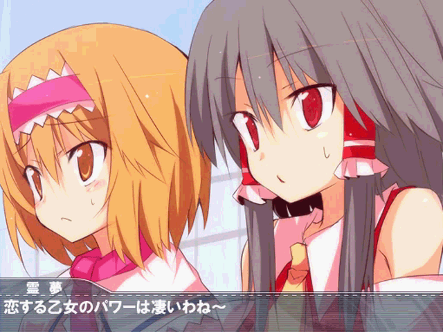
使用ツール：2000
作者：ＫＳＤ
ジャンル：クッキー☆
【総評/レビュー】
[熱2技2語0演2遊2笑2酷2]
本紅白最大のダークホースにして年末の魔物。エントリー時点で受けた衝撃と、その内容を見てからの衝撃はいずれも今でも忘れることができません。ネタに関しては例のアレにつき多言は避けますが、それでも「クッキー☆」を「ヨッシーのクッキー」をベースとしたゲームへと昇華させたという発想それ自体、そして何よりここまで完成度の高いゲームに仕上げた技術力については高く評価されて然るべきでありましょう。内容も一見ネタゲーと見えてその実は作り込まれており、パッチを重ねるごとにやり込み要素も充実しているため、やるゲとしてのボリュームも十分すぎるほど十分です。ネタが通じる人向けであるという感はどうしても否めませんが、分かった上で遊ぶには恐らくはこの上ない作品でありましょう。(Hiro/男性/26歳 ～ 30歳)[熱1技1語1演2遊2笑2酷2]
パズルゲームです。連鎖はなく、お互いにHPとMPがあり様々なスキルを用いて相手を倒すというシステムになっています。説明より実際にやってみたほうがわかりやすいです。元ネタを知らないとストーリーや会話は意味不明だと思います。東方を知っている人なら少しはわかるかも・・・。クリアしての感想は想像以上に面白かったです。細かいところを調整していけば神ゲーになると思います。(クッキー厨/男性/-)[熱2技2語2演2遊2笑1酷2]
パズルゲームはあまりプレイしたことがなかったけどこの作品はクッソ楽しめたイベントスキップもあってサクサクプレイできるので止め時が分からない中毒性のある作品だと思った(小並感)(野獣洗米/男性/16歳 ～ 20歳)
【各部門への評価】
[熱2]
スキルの組み合わせ以上に、操作技術の向上に熱中した。(こと/男性/21歳 ～ 25歳)[熱2]
まるで市販のゲームをプレイしているかのような完成度(-/男性/21歳 ～ 25歳)[技2]
敵破時にBGMに合わせて消滅速度が可変式な処はもうアホとしか(-/男性/21歳 ～ 25歳)[演2]
雑にみせて、視覚的にも音楽的に外さない丁寧な演出があった(m/男性/-)[斬2]
既存のシステムに、新たなゲーム性が加えられていたから。(-/男性/26歳 ～ 30歳)[遊2]
パッチ後の対応がよく、修正されたインターフェイスは良かった。(マーシャル/男性/21歳 ～ 25歳)[笑2]
セットアップの剛竜馬が予想外すぎて草が生えた。(ほら、全然壊れてないよ。まりなの気持ち/男性/21歳 ～ 25歳)[酷2]
元ネタがクッキー☆なのだから、それはひどいに決まってる。(TTTT/-/-)
-

【2位】 No.6 ★アリスの標本箱 (合計点：592pt / 56票 / 提出済)
熱96 + 技46 + 語98 + 演93 + 斬69 + 遊96 + 笑48 + 酷46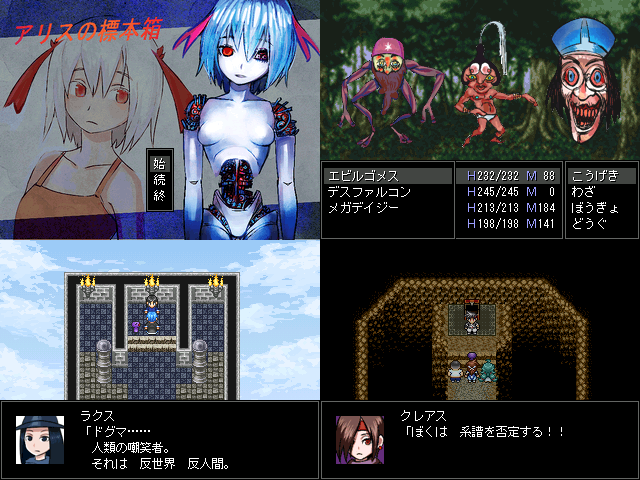
使用ツール：2000
作者：藻太郎
ジャンル：荒唐無稽なデフォ戦ＲＰＧ２
【総評/レビュー】
[熱2技1語2演2遊1笑2酷1]
この作品は、「ドグマの箱庭」と「引き裂かれたバダール」、そして「ポイズンとウィンディシリーズ」という作品の系譜の、一つの集大成であるように思われました。この「アリスの標本箱」は、生まれた者は死に、出会った者は別れるという必然の後者の部分、一つの世界との別れの物語であるように感じられます。それと同時に、この作品は過去の作品の人物たちとの再会の物語でもあります。人が長年を経て変化するように、この作品では過去の人物たちの変化に衝撃を受けることもあるでしょう。しかしそれは、彼ら彼女らの生きた歴史の一部分に過ぎません。一作品の中の登場人物に過ぎないと言えばそれまでですが、彼ら彼女らの終わりの部分だけではなく、それまでの歩みを見届けてこその本作であると、そう断言して良いように思われます。従って、これから遊ばれる方は、是非とも「関連作品」を全て遊んでから、最後にこの作品に着手されることを強く推奨します。(Hiro/男性/26歳 ～ 30歳)[熱2技1語2演2遊2笑2酷1]
前作のときにも思ったのですが、VIPRPGには珍しく、かなりはっきりとした自分の世界を持っているツクラーさんだなと感じました。それでいて、独りよがりで終わることは決してなく、魅せ方も心得ています。 プレイヤーになにをしてほしいか、なにを感じてほしいか。作者さんは直接手を下すのではなく、そっと行き場を示すだけ。どっぷりと頭までハマることができました。(-/男性/26歳 ～ 30歳)[熱2技1語2演2遊1笑2酷1]
退廃的な世界観、時にこちらの心を抉ってくるようなキャラたちの台詞この作風は好き嫌いがハッキリ分かれるだろうが、是非一度プレイしてみて欲しい作品だ(-/男性/21歳 ～ 25歳)
【各部門への評価】
[語1]
敵も含め、登場人物に「こころ」が感じられるのがよかった(-/男性/26歳 ～ 30歳)[語2]
テキストの緻密さとセンスが極上。(-/男性/26歳 ～ 30歳)[斬2]
作者の脳を見せられる感じがたまらない(-/男性/26歳 ～ 30歳)[遊2]
マップも広すぎず敵の強さも程よく非常に遊びやすかった。(Hiro/男性/26歳 ～ 30歳)
-

【3位】 No.28 ★逆転ザック (合計点：499pt / 49票 / 提出済)
熱82 + 技87 + 語63 + 演90 + 斬46 + 遊65 + 笑59 + 酷7
使用ツール：2000
作者：女体化ダークメカアレックス
ジャンル：法廷バトルADV
【総評/レビュー】
[熱2技2語2演2遊1笑2酷1]
悪く言えば元の素材ありきなゲームではありますが、それでもその良さを壊さず、なおかつVIPRPGらしいオリジナリティをふんだんに盛り込んだ素晴らしい作品でした!動作の軽さやキー操作のし易さはある意味本家以上で、よく工夫されているなあと感心しました。上下キーでいいですよね、たしかに。本家をリスペクトしつつ、文章はすべてオリジナルで打ったのだと思いますが、これがしっかり書かれていたのが良かった! 目立った誤字脱字もなく、かといって適当に考えたとは思えない内容が、私のハートに確かに響きました。筋書きを知ってるはずなのにクライマックスで涙ぐみそうになったのは、きっとそれが理由でしょう。とにかく、プレイして良かったと思える良作でした。かなりの労力がかかっていると思われますが、できる事ならいつか事件もオリジナルの続編をプレイしてみたいです。楽しいゲームをありがとうございました!(G-tea/男性/31歳 ～ 40歳)[熱2技2語2演2遊2笑1酷2]
逆転裁判シリーズをモチーフにした作品はこれまでのツクスレでも多々ありましたが、本作がそれらと一線を画しているのはやはりキャラの動きをピクチャで演出しているその手法でしょう。口パクアニメーションの管理は並々ならぬ労力を費やすものだと思われますが、逐一それを仕込んだ作者氏の力の入れ具合にはただただ敬服するほかありません。また、シナリオも本家のテイストに準拠しながらVIPRPG向けにアレンジメントを加えられており、完成度の非常に高い逆裁パロディであると評することができます。(Hiro/男性/26歳 ～ 30歳)[熱2技2語1演2遊1笑1酷2]
他の解答欄でも書きましたが、非常にテンポの良い会話と良質なアニメーションに圧巻。ストーリーの盛り上がり方も非常に良い。しかし惜しむべきはその短さ。2話をいつまでもお待ちしております。この会話の面白さで探偵パートが凄くやりたい。(-/男性/21歳 ～ 25歳)
【各部門への評価】
[熱2]
久しぶりに…ドキドキしちまったよ…(あいぴー/男性/16歳 ～ 20歳)[技2]
文章に口パクと効果音入れるのどうやるんだ……(-/男性/21歳 ～ 25歳)[演2]
ここまでキャラグラが動くツクールゲーははじめてかも・・。(だむ/男性/26歳 ～ 30歳)[笑2]
非常に本家のノリとパロで面白い。テンポも非常にいい。(-/男性/21歳 ～ 25歳)
-

【4位】 No.4 ★カスタムバトエン -mosimo- (合計点：490pt / 54票 / 提出済)
熱89 + 技96 + 語45 + 演64 + 斬83 + 遊73 + 笑34 + 酷6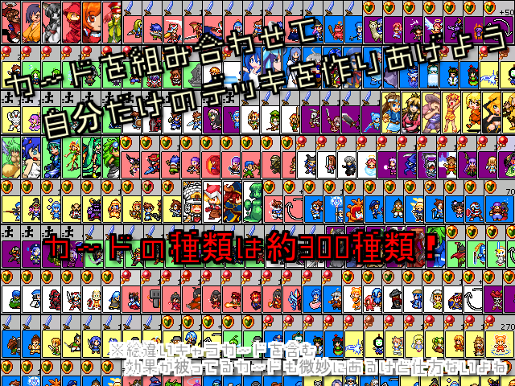
使用ツール：2000
作者：天下り次郎
ジャンル：バトルえんぴつ風カードゲーム
【総評/レビュー】
[熱2技2語1演1遊2笑1酷0]
使える技はサイコロの数次第の運ゲーに多人数戦、疲労の概念を導入して戦略的に戦えるように工夫した傑作。敵の使用デッキも多彩で自然に「こういう戦術もあるのか」とプレイヤーが気付き色々と工夫したくなるような誘導も見事。カードゲームは物量勝負、手間をかける程に良くなるジャンルなので完全版や改良版の続編が出たら嬉しいなぁ。とても面白かったです。(孔雀23号/男性/26歳 ～ 30歳)[熱2技2語1演2遊2笑1酷1]
強いデッキを作り、勝てなそうな相手には弱点をついたデッキを組むという流れでサクサク進めるバランスが良かったです。BGMやカードの絵柄が豊富なのも楽しかった(-/-/-)[熱2技2語1演2遊2笑2酷0]
全く新しいバトルエンピツゲーム。もしくはカードゲーム。いろんな戦術が成立するのが非常に楽しい!(だむ/男性/26歳 ～ 30歳)
【各部門への評価】
[技2]
オリジナルのゲームルールをきちんと昇華していた。遅延もない。(孔雀23号/男性/26歳 ～ 30歳)[語1]
理想の世界はなかなかカオス。特にファミチキ城(-/-/-)[斬2]
まさかバトルエンピツがこうなるとは・・。(だむ/男性/26歳 ～ 30歳)
-

【5位】 No.48 ★年末謝罪大戦 (合計点：434pt / 47票 / 提出済)
熱62 + 技46 + 語64 + 演80 + 斬48 + 遊70 + 笑45 + 酷19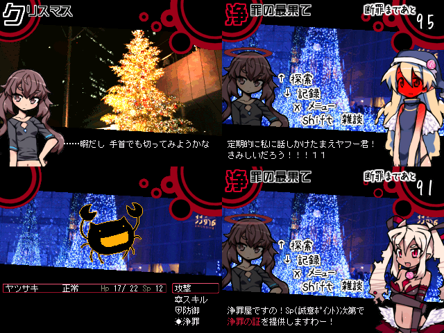
使用ツール：2000
作者：コの字
ジャンル：ノンフィールドRPG
【総評/レビュー】
[熱1技0語1演2遊0笑2酷1]
ストーリー面では「死」がつきまとうにも拘わらず主人公やその周りが妙に朗らで生き生きとして、悲観的なものが無い。哲学ぶった一説を振りかざす小難しい物では無かったのでやや気を楽にしてプレイができた。また、戦闘や収集におけるストレスの無さが、このゲームのテンポを良い物にしており非常にさくさくと進める。(-/-/-)[熱2技1語1演2遊1笑2酷1]
本作はいわゆる「雪道ゲー」に分類されると思いますが、通常の雪道系とは異なり進むだけのゲームなのでシステム自体は非常にシンプルです。それでも随所に仕込まれた寸劇や世界観そしてキャラ等々、好奇心をくすぐるゲーム設計には思わず熱中して遊んでしまわせるだけの粋があるように感じられました。軽めのシナリオでこそあるものの考えさせられるシーンもあり、手軽に遊べるということもあるので、まだの方は是非とも遊んでみて欲しいゲームの一つです。(Hiro/男性/26歳 ～ 30歳)[熱1技1語1演2遊0笑1酷1]
↑キー押して進んでいく系のデフォ戦。後退はできない。22枚のタロットカード(もとい装備品)を集めてラスボスを倒すことが目的。難易度は低め。何も考えなくても最良エンディングが観られる。オリジナルキャラながら、とっつきやすい絵柄と簡潔な導入で違和感はなかった。(こと/男性/21歳 ～ 25歳)
【各部門への評価】
[語2]
大きな感動でなくとも純粋に素敵なお話だと思った わりとマジで(も/性別不明/年齢不明)[演2]
善哉であるぞ、ヤクスタトル君。(-/男性/21歳 ～ 25歳)[遊2]
必要な操作が少なく直感で操作しやすかった(献血太郎/男性/21歳 ～ 25歳)[笑2]
スイと構えたBNTRN型銃でヤクトドーガ君に襲いかかる所(年末なのに仕事があってしにたいおじさん/男性/31歳 ～ 40歳)[笑2]
金髪の主人公の呼び方 ヤフー君かわいいよヤフー君(献血太郎/男性/21歳 ～ 25歳)
-

【6位】 No.69 ★図書館探索ゲェム (合計点：398pt / 39票 / 提出済)
熱65 + 技53 + 語33 + 演60 + 斬53 + 遊46 + 笑53 + 酷35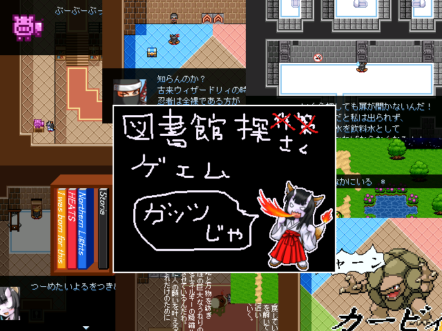
使用ツール：2000
作者：とうふ
ジャンル：ADV
【総評/レビュー】
[熱2技1語0演2遊2笑1酷2]
捻くれまくった謎解きゲーここに参上!とんちとやり直しを駆使してお宝コンプを目指そう!(ccbr/男性/21歳 ～ 25歳)[熱2技2語1演2遊2笑2酷2]
全コンプへはほぼ1本道だが、ミスリードがとにかく多い。しかし、ハメられても「くっそ、これどう使うのが正しいんだよ」と再プレイできるのが、このゲームの不思議な魅力。そして正解は斜め上と言うよりは別次元なものもあり、笑うこともあった。そんな発想の迷宮を存分に楽しませてもらいました。(-/男性/21歳 ～ 25歳)[熱2技1語0演1遊1笑1酷1]
過去の作品を含めてこの作者の作品を遊んでみると面白いかも知れないこんな視点こんな解き方があるのかと眼から鱗ですイジワルだけど(-/男性/-)
【各部門への評価】
[熱2]
300満点を目指して何周もプレイした。(-/-/-)[技2]
プレイヤーの思考の遥か先を見通したフラグ構築に天晴れです(-/-/-)[演2]
とにかく良く動く良く鳴るそして全くうっとおしさを感じさせない(ccbr/男性/21歳 ～ 25歳)[斬2]
謎解きの発想が超おかしい(-/-/-)[遊1]
パッチによるヒントの追加で遊びやすくなった。(-/男性/21歳 ～ 25歳)[笑2]
至る所だよ!ネタ仕込みすぎだwwwwwwwwww(ccbr/男性/21歳 ～ 25歳)
-

【7位】 No.68 ★AleBr (合計点：376pt / 38票 / 提出済)
熱43 + 技33 + 語53 + 演57 + 斬35 + 遊50 + 笑61 + 酷44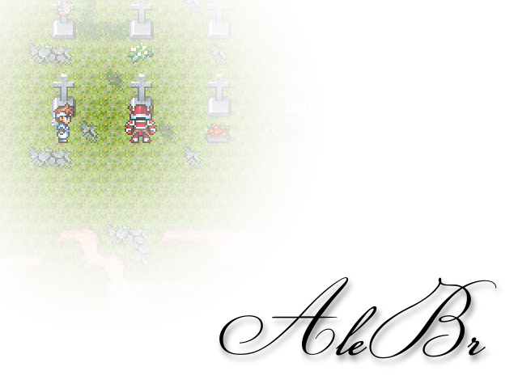
使用ツール：2000
作者：せくては
ジャンル：ksg
【総評/レビュー】
[熱0技1語0演1遊0笑2酷1]
長い間失踪していたブライアン。アレックスはあまりに長い間行方不明になっていたブライアンを死んだものと思い、すでに葬式をあげてしまっていた。そこへある日突然ブライアンが現れて……!? アレブラ主体の見るゲ。(こと/男性/21歳 ～ 25歳)[熱2技1語2演2遊2笑2酷2]
アレックスとブライアンが酒の席で交わす会話と、それを基調としたksgが交互に織りなす展開は、しんみりとした雰囲気とギャグとを絶妙に組み合わせた独特の構成です。ksgのひどさについては今更多くを語るまでもなく、アレブラの会話もなかなかに大概なのでギャグゲーに分類して良いとは思いますが、最後のオチは必見。(Hiro/男性/26歳 ～ 30歳)[熱2技1語1演2遊1笑2酷2]
とにかく一つ一つのネタが面白く会話のテンポも良いのでサクサク読み進めて大いに笑えるラストはちょっとしんみり?(-/男性/21歳 ～ 25歳)
【各部門への評価】
[語1]
合わない話もあったけど、最後がすごく切なくなりました(-/男性/21歳 ～ 25歳)[演2]
衝撃が走っていった(-/性別不明/61歳 ～ それ以上)[笑2]
友人の約束をすっぽかして風俗に行くブライアン。(だむ/男性/26歳 ～ 30歳)[酷1]
こいつらあほだな(-/男性/21歳 ～ 25歳)
-

【8位】 No.18 ★Memory of Moshimo (合計点：314pt / 38票 / 提出済)
熱55 + 技54 + 語25 + 演50 + 斬37 + 遊54 + 笑29 + 酷10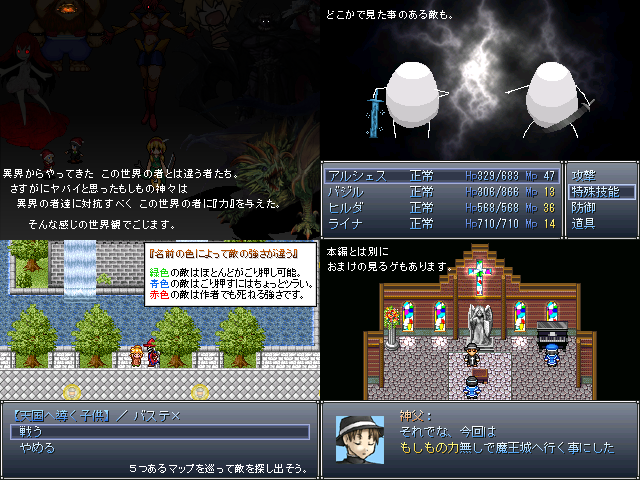
使用ツール：2000
作者：牧場の牛肉
ジャンル：デフォ戦
【総評/レビュー】
[熱2技1語0演1遊1笑2酷1]
約四年がかりの制作ということで、非常にボリューム豊富なデフォ戦ゲーでありました。数の豊富なプレイヤーキャラから好きにメンバーを汲んで戦うタイプのデフォ戦ですが、敵ごとに特徴が明確に分かれており対処法も個別に違ってくるため、力で押し切るタイプの戦闘というよりかはむしろ相手によってこちらも手を変えるという、ある意味ではカードゲームでデッキを組むような感じの戦闘であったように思われます。反面、敵の数が膨大なだけに、一戦一戦がそれなりに時間がかかることで消耗も激しいゲームであることは否めなかったように思います。それでも、強いキャラで押し切るもよし、無理ゲーめいたメンバーで果敢に挑むもよしと、プレイスタイルが自由なゲームであることもまた事実です。本作に育成要素がないという点は賛否分かれるところでしょうが、少なくとも遊びやすさの面から言えばこちらの方に利があるというのが個人的感想です。(Hiro/男性/26歳 ～ 30歳)[熱2技2語0演2遊1笑1酷1]
どのボス戦にも特徴があって楽しかった。戦う前のワクワク感や、初見で倒せるか倒せないかの緊迫感。敵の特性だけでなく、『ナイトメア』『ブラッドウォーター』戦などの演出面にも目を見張らされた。 この手のゲームにありがちな「絶対にこういう役割のキャラを入れないと勝てない」という作りにはなっておらず、適度なバランスだと感じた。 全体回復を入れても入れなくても勝てるとか、状態異状や属性の活躍する場が多めに与えられていて、余分なところを切りつめ、少ない要素を大きく活用したなァって感じ。 真摯に作られたデフォ戦を堪能させてもらいました。(-/男性/26歳 ～ 30歳)[熱2技2語0演1遊0笑2酷1]
お祭りゲー。デフォ戦飽きた人もキャラ選択画面だけでも見て損はない(-/-/-)
【各部門への評価】
[熱2]
全戦ボス戦っていう感じで、くせのあるギリギリの攻防が楽しめた(-/男性/26歳 ～ 30歳)[技2]
156人の仲間の良バランス調整は、まぎれもなく作者の技術の証(-/男性/21歳 ～ 25歳)[演1]
エフェクトの数がとにかく多い。未だに全部見れてない(-/-/-)
-

【9位】 No.5 ★ヴァンパイアⅡ -DOMINION- (合計点：301pt / 28票 / 提出済)
熱48 + 技37 + 語47 + 演51 + 斬27 + 遊34 + 笑34 + 酷23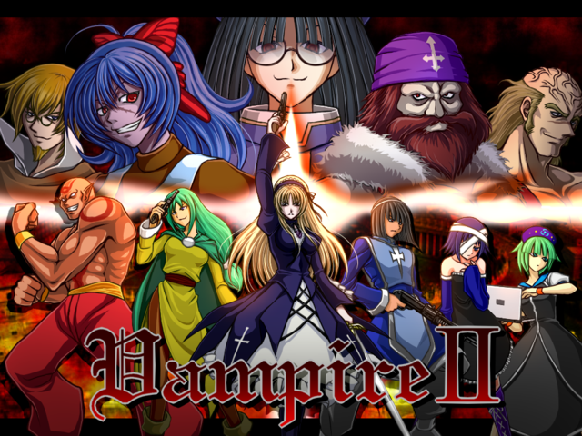
使用ツール：2000
作者：池田さん
ジャンル：ダークアクション見るゲー
【総評/レビュー】
[熱2技2語2演2遊2笑2酷2]
この作品はダークな一方で笑いあり涙あり、パロディ、オマージュありな作品でした。特におぜうさまとローレンはお気に入りです。一方で意外なバチカンの風景があったところも面白かったです。(-/男性/16歳 ～ 20歳)[熱2技1語1演0遊0笑0酷1]
バイオハザードのゾンビのような性質を持ったヴァンパイア組織、「ユダの血族」とその血族に因縁を持つヴァンパイアハンター、「おぜう」との戦いを描いた見るゲ。種々の少年漫画的ワクワク感をかき集めてMIXしてある。ツッコミどころは多く荒削りな作風。受け付けない人にとっては見る価値のないものとなるかもしれない。細かいことを気にしなければ、突き上げてくる高揚と期待に身を任せ、登場人物のギャップ描写にときめいているうちに全話観終えることになると思う。(こと/男性/21歳 ～ 25歳)[熱2技2語2演2遊1笑2酷1]
1と番外編から時を隔てて久々の新作、時間をかけられただけあって内容は非常に充実したものでした。存在が示されていた血族最高幹部のマリアとおぜうの頂上決戦自体も見ものではありますが、この作品はそれ以外のハンターや衛兵、市民たちの戦いも大きな見どころです。それまでの何気ない日常を描いた上で、戦いの中で生き抜き、あるいは散ってゆくことを、単なる名無しのモブたちの生き死に以上のものへと高めており、おぜうの戦いに焦点を当てたこれまでの作品から教会対血族、そして第三勢力という大きな潮流へと作品が動いてゆくのが今作からは感じ取れました。次回作、そして最終作まで構想は既に固まっているということで、今後のおぜう達の戦いに目が離せません。(Hiro/男性/26歳 ～ 30歳)
【各部門への評価】
[熱2]
熱く、且つ悲しくもあり、何より力強いシナリオにひきこまれた。(-/男性/-)[語2]
でも人死にすぎィ!(だむ/男性/26歳 ～ 30歳)[演2]
それぞれの素材を使いこなした演出は見張るものがあります。(-/男性/16歳 ～ 20歳)
-

【10位】 No.51 ★イクゾーダス (合計点：278pt / 26票 / 提出済)
熱26 + 技33 + 語20 + 演48 + 斬33 + 遊29 + 笑42 + 酷47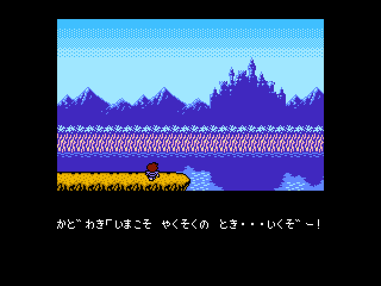
使用ツール：2000
作者：内藤春人
ジャンル：本当の勇気を知る刹那のRPG
【総評/レビュー】
[熱2技2語0演2遊2笑1酷2]
多くを語ることはこの作品には恐らく相応しくはなく、恐らくは自らの眼でこのひどさを体感されることこそが最善であるように私には思えてならない。(Hiro/男性/26歳 ～ 30歳)[熱0技2語0演2遊0笑2酷2]
自由に移動できることに感動を覚えるRPG。(だむ/男性/26歳 ～ 30歳)[熱2技2語0演2遊0笑1酷2]
どこか懐かしさを覚える雰囲気、凝った作りのドット絵、そして衝撃的なラスト。これは今紅白屈指の超大作である!(-/男性/21歳 ～ 25歳)
【各部門への評価】
[語1]
ストーリー”だけ”はAクラスだった。(-/-/-)[演2]
超ドット これにつきる(も/性別不明/年齢不明)[酷2]
ち、ちくしょう(-/男性/21歳 ～ 25歳)
-

【11位】 No.47 ★ルインシーカー -寂しがりやのカタコンベ- (合計点：265.5pt / 30票 / 遅刻提出済)
熱48 + 技36 + 語42 + 演49 + 斬27 + 遊49 + 笑31 + 酷13
使用ツール：2000
作者：ツノザメ怪人
ジャンル：見るゲとやるゲが両方そなわり最強に見える
【総評/レビュー】
[熱2技0語2演1遊1笑2酷1]
手頃な謎解きと気になる続き、とんとん拍子に進むテンポのよさでPIAIしてて楽しい作品だったラナさんかわいい、でも好きなのはファルコンの糞野郎っぷり(-/男性/21歳 ～ 25歳)[熱2技1語1演2遊1笑1酷1]
カーくんかわいいよカーくん。そしてあざといと評判のラナさんもまたかわいいと思うんですよ!(だむ/男性/26歳 ～ 30歳)[熱2技0語1演1遊1笑2酷0]
短くも長くもない 難易度はパズルに向いてなくてもおk パズル解けながら普通にいい見るげ (-/男性/-)
【各部門への評価】
[語2]
ダーブラ△ ファルコンはただの猿だった(-/-/-)[語2]
探索を進めるたびに明かされていく謎! ワクワクするよね(-/男性/21歳 ～ 25歳)[演2]
カーバンクルの声がムダに似合っていた。(だむ/男性/26歳 ～ 30歳)
-

【12位】 No.13 ★ドラ子かわいい (合計点：230pt / 24票 / 提出済)
熱36 + 技34 + 語36 + 演32 + 斬25 + 遊27 + 笑24 + 酷16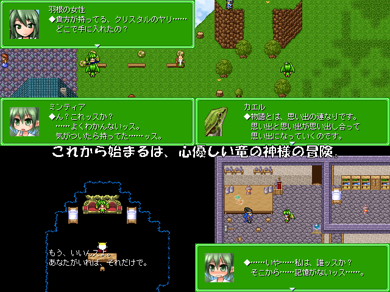
使用ツール：2000
作者：Ｓテル
ジャンル：ゴリ押しRPG
【総評/レビュー】
[熱2技2語2演2遊0笑1酷2]
エスリンサーガバーストや迫真幻月RPGを知っているならニヤリとしたり、衝撃の展開に驚かされたりととにかくすごいとしか言えなかった。(-/男性/21歳 ～ 25歳)[熱2技2語2演2遊1笑1酷1]
ドラ子かわいいまだ未完成なので完成版に大いに期待が出来る作品。ドラ子かわいい(紅蓮/性別不明/16歳 ～ 20歳)[熱1技1語1演1遊0笑1酷1]
ひどい目にあう子はみなかわいいとおもいます(錯乱)(だむ/男性/26歳 ～ 30歳)
【各部門への評価】
[技1]
面倒な部分もあったがよい戦闘システムだと思った(小並感)(-/-/-)[演2]
コンボ最後まで決まった時の爽快感!(ゾルガ/性別不明/16歳 ～ 20歳)[遊2]
目押しがムズいけどそういうゲームだ(-/男性/21歳 ～ 25歳)
-

【12位】 No.42 ★もしもアイスⅢが母親だったら (合計点：230pt / 21票 / 提出済)
熱22 + 技18 + 語25 + 演32 + 斬30 + 遊29 + 笑32 + 酷42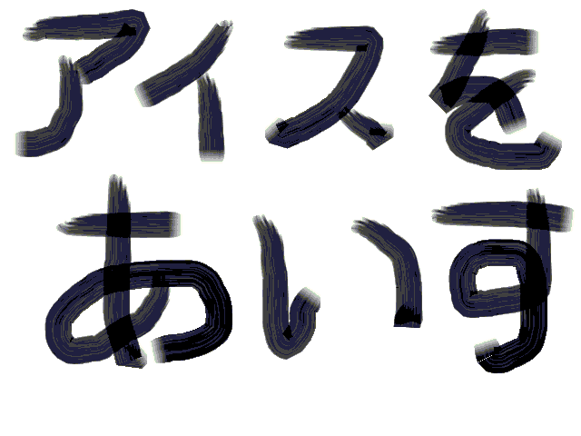
使用ツール：2000
作者：生活保護君
ジャンル：見るゲ
【総評/レビュー】
[熱0技0語0演0遊0笑0酷1]
本編:もういろいろひどい エロ微グロ注意おまけ1:ひどおまけ2:これはワロタおまけ3:うーんこの・・・おまけ4:nnkrおまけ5:わろた・・・わろた・・・(´Д⊂ヽ(-/-/-)[熱2技1語2演2遊2笑2酷2]
マジで狂っとる(こて/男性/21歳 ～ 25歳)[熱2技2語2演2遊2笑2酷2]
2013ねん最大の酷さ。(山本山/男性/31歳 ～ 40歳)
【各部門への評価】
[語2]
ある意味衝撃的(ブライアン/男性/21歳 ～ 25歳)[斬2]
作者が体を張ってたから(-/-/16歳 ～ 20歳)[笑2]
リナ全裸放置、包丁ED、乳首いじり(-/男性/26歳 ～ 30歳)[酷2]
すべてひどい。マジキチ。(山本山/男性/31歳 ～ 40歳)[酷2]
全部(-/男性/16歳 ～ 20歳)[酷2]
全部(ちんこ/男性/26歳 ～ 30歳)
-

【14位】 No.61 ★魔王の娘でも分かる心理学 (合計点：217pt / 28票 / 提出済)
熱33 + 技13 + 語33 + 演23 + 斬41 + 遊39 + 笑22 + 酷13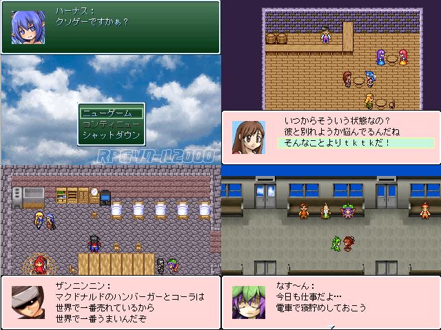
使用ツール：2000
作者：かきぴー
ジャンル：心理学が学べる見るゲです。
【総評/レビュー】
[熱1技0語1演1遊1笑1酷1]
タイトル画面だけ見て「一発ゲーかな?」と思ったのですが、心理学について詳しく書かれていて勉強になります(-/男性/21歳 ～ 25歳)[熱0技0語1演0遊1笑1酷0]
見るゲ。様々に分類された「影響力」について、実例を見ながら学べる。心理学を学ぶ、というよりは、言われてみれば確かに……という「あるある」ネタとその分類の確認といった趣だった。(こと/男性/21歳 ～ 25歳)[熱1技0語1演1遊2笑1酷1]
学習した心理学が身近なところで起こってるんだなあと最後の「ツクラーの心理学」で気付かせる構成が秀逸だと思った。話はテンポ良く進むが一部ボリューム不足なのが惜しい所。作者がとってもかわいい(-/男性/16歳 ～ 20歳)
【各部門への評価】
[遊2]
速い読みやすい分かりやすい(SGYSNJ/男性/16歳 ～ 20歳)[遊2]
1つ1つの物語が短く例もシンプルなので分かりやすかったです。(-/-/-)
-

【15位】 No.65 ★釣りックス (合計点：209.7pt / 22票 / 遅刻提出済)
熱36 + 技38 + 語5 + 演29 + 斬27 + 遊33 + 笑31 + 酷34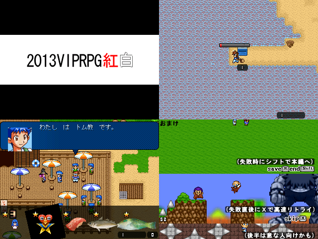
使用ツール：2000
作者：うじみ
ジャンル：ＲＴＰ系
【総評/レビュー】
[熱2技2語0演1遊2笑2酷2]
アクションゲームとしては破格の構成、とにかく難しいのだけれどもリトライがしやすすぎるほどしやすいというゲームデザインは商用ゲームでもフリーゲームでもなかなか類を見ないものだと思います。操作性も抜群に良いため、アクションゲームとしての完成度は最高峰だと言って過言ではないでしょう。同時に、極めて難しい(と個人的には思う)ステージ構成には思わず心が折れそうになりますが、それもリトライの容易性のためについつい何度も再挑戦してしまうという、かなり中毒性の高いゲームであるとの側面もあるように感じました。自分は遂に諦めてしまいましたが、修正前の版でノーミスクリアを達成した方がいるという事実には戦慄せざるを得ません。(Hiro/男性/26歳 ～ 30歳)[熱2技1語0演2遊1笑1酷2]
ストーリーは王道?なのかな・・・アクションとしては隠しブロックなどの初見殺しが多かったものの、全体的に簡単すぎず難しすぎずな難易度で遊べた。これらの隠しブロックや初見殺しはゲームの雰囲気のお陰で、あまり苛立たなかった。しかし、終盤の城ステージでは即死トゲが張り詰められており、ちょっとしたミスで死んでしまったりするので、あまりやっていて楽しくなかった。(紫蘭/男性/21歳 ～ 25歳)
【各部門への評価】
[熱2]
熱中しなければクリアできない。(だむ/男性/26歳 ～ 30歳)[技2]
マリオだこれwwww(-/性別不明/61歳 ～ それ以上)[遊2]
とにかくミスしてから復帰までの容易さが尋常ではない。(Hiro/男性/26歳 ～ 30歳)[酷2]
苦労して逆走した結果があれかよwww(ゆこゆこ/男性/26歳 ～ 30歳)
-

【16位】 No.24 ★わてり☆初体験 (合計点：198pt / 27票 / 提出済)
熱23 + 技10 + 語26 + 演24 + 斬23 + 遊20 + 笑38 + 酷34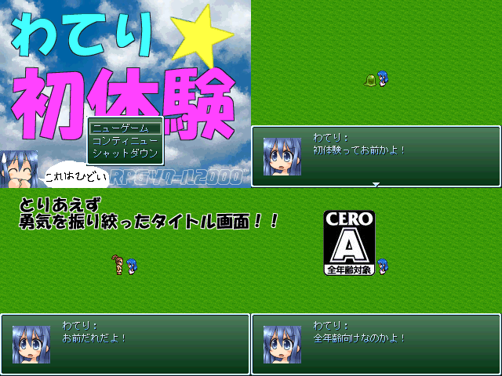
使用ツール：2000
作者：比較的悪いスライム
ジャンル：わりと正統派わてり系見るゲー
【総評/レビュー】
[熱1技0語2演1遊0笑1酷2]
全体的に拙いがほっこりした感じが、わてりと組み合わさることで不思議な良さを生み出している。(-/男性/21歳 ～ 25歳)[熱2技0語1演1遊2笑0酷2]
独特の雰囲気が心地よかったです。リナもわてりもウィンドも可愛いナリィ・・・。またやりたい(-/-/-)
【各部門への評価】
[演1]
ウィンディの話の最後がすごかったです(-/男性/21歳 ～ 25歳)[遊0]
適当に進むと一部の会話イベントを見逃すことがあった(-/男性/21歳 ～ 25歳)
-

【17位】 No.43 ★もしも死神五世と・・・ (合計点：195pt / 26票 / 提出済)
熱33 + 技15 + 語36 + 演30 + 斬11 + 遊33 + 笑31 + 酷6
-

【18位】 No.66 ★フレイミングリターンズ（旧題：炎の他宅警備員） (合計点：181.8pt / 22票 / 遅刻提出済)
熱28 + 技12 + 語28 + 演27 + 斬17 + 遊26 + 笑34 + 酷30
使用ツール：2000
作者：バーティカル外藤
ジャンル：君に別れを告げて君でない他の誰かに逢いに行くｋｓｇ
【総評/レビュー】
[熱2技0語2演2遊0笑1酷2]
百合ゲーでありながらサクサクと遊べる短編ゲーとしても高評価。確かに人を選ぶジャンルではあるけどもそれさえ満たせるならぜひ遊んでみてほしい。難点を挙げるとするならやっぱり条件の難しさだな・・・脱出の要となるコンボのヒントをもう少し出しても良かった気がする。(ファレイムさん/男性/21歳 ～ 25歳)[熱1技1語1演2遊1笑2酷2]
色々組み合わせ考えて試せるのがいい。フレイムさんかわいいしわてりもかわいいそして僕はEND4派(-/男性/21歳 ～ 25歳)
【各部門への評価】
[熱1]
セット装備を探すのが面白い(-/男性/21歳 ～ 25歳)[語2]
ギャグ、シリアス、鬱、キマシ。全てを網羅したのが高評価。(ファレイムさん/男性/21歳 ～ 25歳)
-

【19位】 No.56 ★超日本列島とらべる絵草紙 (合計点：180pt / 19票 / 遅刻提出済)
熱27 + 技16 + 語21 + 演32 + 斬27 + 遊16 + 笑32 + 酷29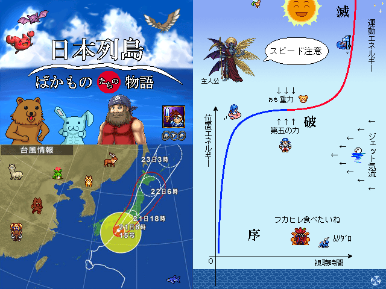
使用ツール：2000
作者：黄泉つ
ジャンル：ジェットコースター☆みるげ
【総評/レビュー】
[熱1技1語1演1遊1笑1酷1]
遅刻提出でも信じて待ってよかったです。即ぴあいしました。以下感想。 「ジェットコースター」に偽りなし。ハナからプレイヤーについていかせる気のないシナリオ進行は過去作と変わらず、ここまで突き抜けていれば潔い。 贅沢な素材使用の方はどんどん進化していて、ケーキもラーメンもステーキも纏めて煮込んで鍋にしましたって感じ。 不満点を言うなら「なんじゃとー」のSEがもっとしつこく使ってよかったし、おばけカルテットとしての出番がもっとほしかったかな。あとほんとなんでもいいのでぴあい後のおまけ要素って大好きなので入れてほしかった。(桜田ぴよこ/女性/21歳 ～ 25歳)
【各部門への評価】
-

【20位】 No.49 ★又吉議員物語 (合計点：171pt / 18票 / 提出済)
熱23 + 技20 + 語21 + 演16 + 斬21 + 遊20 + 笑29 + 酷21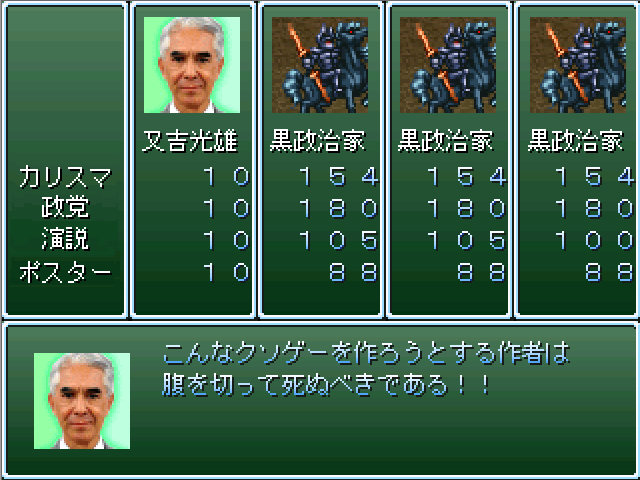
-

【21位】 No.55 ★娘様のジャンプアクション (合計点：169pt / 22票 / 提出済)
熱33 + 技40 + 語7 + 演28 + 斬22 + 遊27 + 笑7 + 酷5
使用ツール：2000
作者：アサリ
ジャンル：ステージクリア型のアクション
【総評/レビュー】
[熱2技2語0演2遊0笑2酷0]
全体的に丁寧な作りであった。ステージ数は少ないものの、一つ一つが丁寧に作られ、ステージの特色が十分に出ていたと思う。ステージから出ると選択画面が昼から夜になったり、それに伴いBGMが変化したり、一番見るステージ選択画面であるからこそ飽きさせない工夫がされていると思った。(紫蘭/男性/21歳 ～ 25歳)[熱2技1語0演1遊1笑2酷0]
シンプルで分かりやすく、遊びごたえも充分にあるクリア出来ないように見えてもやり直せば出来る絶妙なバランス感覚が素晴らしい(-/男性/21歳 ～ 25歳)[熱1技2語1演2遊2笑1酷1]
とても丁寧で緻密な作りこみが窺えます。RPGツクールでこんなアクションが作れてしまうことに驚愕。(-/性別不明/31歳 ～ 40歳)
【各部門への評価】
[技2]
敵の動作が細かく丁寧。(紫蘭/男性/21歳 ～ 25歳)[遊2]
難易度調節が効いていること(紫蘭/男性/21歳 ～ 25歳)
-


【22位】 No.12 ★Re:Birthible (合計点：159.3pt / 18票 / 遅刻提出済)
熱30 + 技33 + 語21 + 演27 + 斬26 + 遊21 + 笑11 + 酷8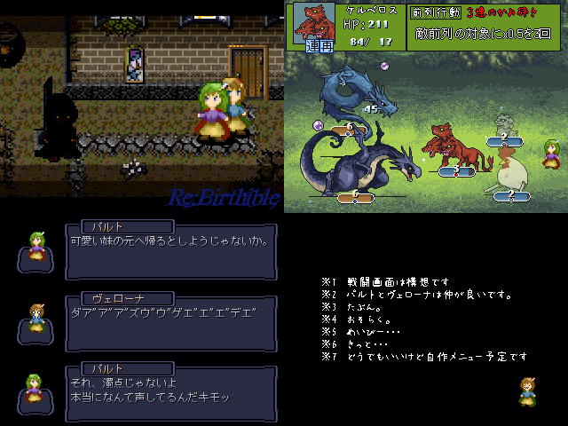
使用ツール：2003
作者：めふぃすと
ジャンル：召喚型世界やり直しRPG
【総評/レビュー】
[熱2技2語1演2遊1笑2酷0]
戦闘システムが非常によく出来ていると思います一部技が強すぎるかなと思わせつつメリットデメリットのバランスや同様の技を相手が使うこともあるためいい意味で辛い戦闘も出来上がるので非常に私の好みです。コストがゆるすぎるせいであまりPT作るときにコスト面で困った記憶が皆無なのでこのシステムなくても良かったのではとは思いました でもキャラパワーの指標としてちょうどいいのかな・・・?レベリングも必要だったらすればいいし、しなくてもいいという体なのも良。ストーリーは戦闘面に比べるとすばらしい出来だとは思いませんが悪くはないと思います。よくあるループものという感じ。まず30分くらいやって戦闘システムに慣れた時に戦闘だけで面白いと思えればその人はそのままエンディングまでプレイできそうな気がします。(-/男性/21歳 ～ 25歳)[熱2技2語1演1遊2笑1酷0]
非常に作りこまれた自作戦闘やメニューが非常に印象的な作品でした。序盤は少し単調ですが仲間が増えてくると戦略性がでてきて考えさせられました。特にラスボス戦では今まで使っていなかった意外なユニットが活躍するなど、驚かされる点がありました。不満点を上げるとすれば上位互換がある味方ユニットが多数存在しており、組めるパーティの選択肢が思ったよりも少なかったことと、属性の優劣が直感的に理解できなかったことでしょうか。ストーリーは過去作や専門用語などが説明不足に感じましたがループものとして面白かったです。(-/男性/26歳 ～ 30歳)[熱2技2語2演2遊2笑2酷2]
フリゲ2013で前作に投票したくらい好きなシリーズなので、今回もPIAI。いろいろ編成を考えて楽しめました。ゲーム以外の部分では、素材がフォルダで階層化されているのに気づいて2009Uすごいなーとか思ったりもしました。(-/-/21歳 ～ 25歳)
【各部門への評価】
[熱1]
手持ち少ない序盤のハードル高すぎィ!それを超えればハマる(-/男性/21歳 ～ 25歳)[遊1]
スキルや状態の数が多い割に、敵の行動の説明が少ない。(-/男性/26歳 ～ 30歳)[笑1]
姉さん真顔で下ネタ捻じ込んでくるのやめてください。(-/男性/26歳 ～ 30歳)
-

【23位】 No.26 ★VIPRPG OP (合計点：154pt / 19票 / 提出済)
熱20 + 技24 + 語6 + 演34 + 斬23 + 遊12 + 笑20 + 酷15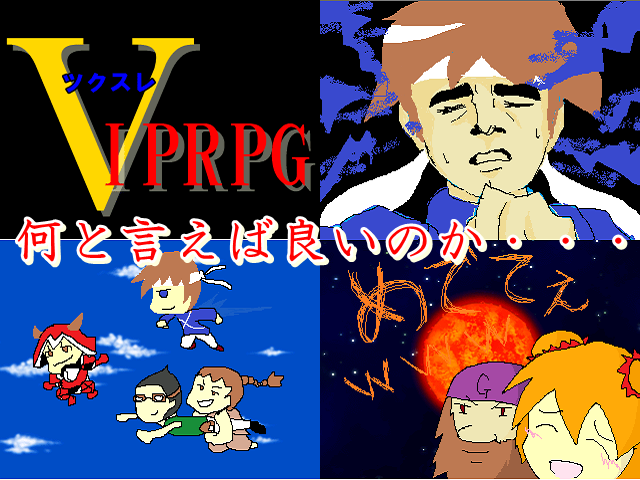
-

【24位】 No.3 ★RPGツクール the run (合計点：137pt / 23票 / 提出済)
熱26 + 技20 + 語1 + 演18 + 斬25 + 遊36 + 笑8 + 酷3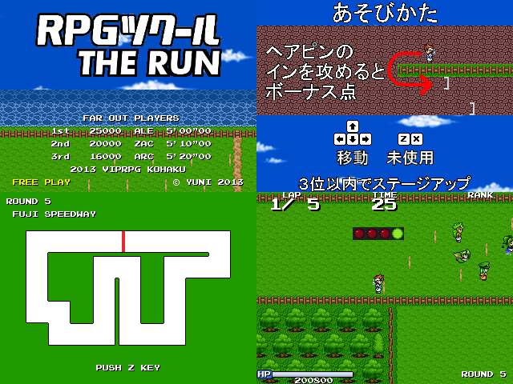
使用ツール：2000
作者：ユニ
ジャンル：レースゲーム
【総評/レビュー】
[熱1技1語0演1遊1笑1酷0]
タイトル画面から伝わるレトロな雰囲気とシンプルなゲーム内容がマッチしていて作品に統一感がある。ツクール2000製にしては珍しいレースアクションというジャンルなのだけどスピード感も十分だ。レースゲーム故にシンプルでプレイヤーの出来ることが少ない。プレイヤーの入力がキャラクターの方向転換にしか使われなく、より入力で出来ることを増やすか、より入力しないで出来ることを増やすかでゲーム性の発展方向が見えてきそう。単純な繰り返し遊ぶゲームなので、リトライがお手軽でストレスなく再挑戦できるのはありがたい。(サルトルおっかけた/男性/26歳 ～ 30歳)[熱1技1語0演1遊1笑2酷0]
思わず何度もプレイしてしまう面白さ。手頃にクリアできる短さとシンプルなゲームルールなので、やりやすくハマりやすい。高得点取ろうとつい躍起になってしまう!(-/男性/21歳 ～ 25歳)[熱2技2語0演2遊2笑2酷1]
シンプルながら、奥が深い見下ろし型レースゲーム。反射神経を使ってアウトインアウト。連続クリッピングポイントボーナスでのスコア上昇は快感。(marukaz/男性/16歳 ～ 20歳)
【各部門への評価】
[熱2]
シンプルなルールであるため、遊びやすくなにより爽快感がある(-/-/-)[技1]
2kのアクションでは難しいスピード感がよく出ていたと思う。(サルトルおっかけた/男性/26歳 ～ 30歳)[斬2]
かけっこをここまで軽くスピーディにできるのは多分この人だけ!(生麦生米生卵/男性/21歳 ～ 25歳)
-

【25位】 No.8 ★無双庫番 (合計点：133pt / 18票 / 提出済)
熱27 + 技26 + 語4 + 演19 + 斬28 + 遊24 + 笑1 + 酷4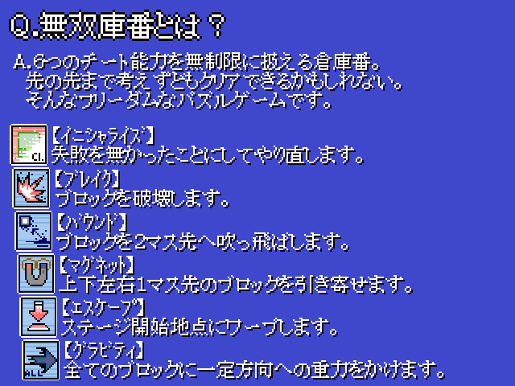
使用ツール：2000
作者：海老１０
ジャンル：思考停止パズル
【総評/レビュー】
[熱2技2語0演2遊2笑1酷0]
すでに完成されたパズルの印象を持つ倉庫番をこのように活かしてくるとは思いませんでした。 技を無制限に使えることで、一つの面がクリアできないがために、以降の面に進めないパズルゲームにつきものの理不尽さがなくなっています。それでいてクリアしたらクリアしたで「次はまっとうにクリアできるようにしよう」とやる気が向上します。 ルールはシンプルながら、チュートリアル的な最初のワールドも挟んであるので、非常にとっつきやすい。とても面白かったです。(-/男性/26歳 ～ 30歳)[熱2技2語1演1遊2笑1酷0]
どこでどのチートを使えばいいかなど考えるのが楽しい。ありそうでなかったシステムで面白かった。(-/-/-)[熱2技1語0演1遊2笑1酷0]
パズルにイライラし始めたらグラビティ&ブレイクでウサ晴らししてからまたスタートや(-/男性/21歳 ～ 25歳)
【各部門への評価】
[熱1]
スキル使用の試行錯誤が良かった(-/-/-)[斬1]
無制限で能力を使える倉庫番は初めてプレイした。(-/男性/26歳 ～ 30歳)[遊1]
技選びがちょっとだけ面倒くさかったです(-/男性/26歳 ～ 30歳)
-

【26位】 No.37 ★ブームズショウユキャンプ (合計点：111pt / 16票 / 提出済)
熱9 + 技8 + 語1 + 演18 + 斬24 + 遊15 + 笑18 + 酷18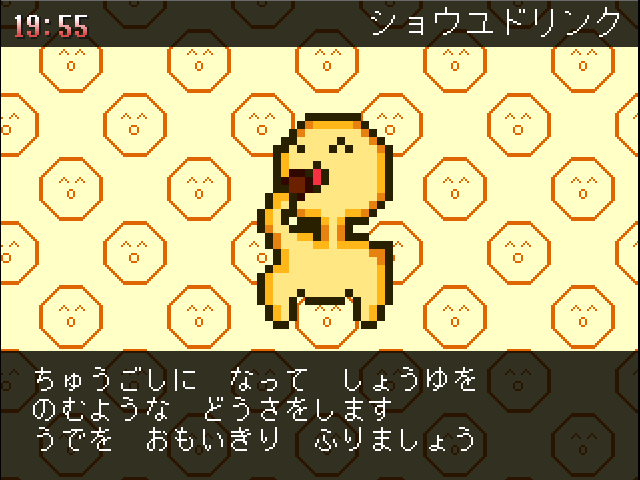
使用ツール：2000
作者：いれあ
ジャンル：腹筋崩壊装置（物理）
【総評/レビュー】
[熱1技1語0演1遊2笑1酷1]
ネタ枠かと思いきやどこぞのブートキャンプを思わせる本格的な運動ゲームだった。この手の内容は初だったが、非常に楽しい運動が出来る。この作品にはツクールの新しい可能性を見ることができた!運動の種類と曲を追加したバージョンを俺はいつまでも待ってるぞ!!(-/男性/26歳 ～ 30歳)[熱0技1語0演1遊1笑2酷0]
ビリーズブートキャンプをツクールでやった作品だけど、実際にモニターの前で身体を動かして見て思ったのは、意外に相性いいなと。 ブーム君の画像がアップで出てきて、そのドットに任せて動くだけなんだけど、ドットがあまりにも抽象的すぎるので、身体に無理させない範囲で長期間の運動をさせることができる。普段運動しない身には中腰だけでもきつく、長時間中腰にさせるだけでも効果があるなァと。(-/男性/26歳 ～ 30歳)[熱2技0語0演1遊2笑2酷2]
このゲームで腹筋が鍛えられました!(30歳 会社員♂)(-/男性/26歳 ～ 30歳)
【各部門への評価】
[演2]
ブームくんのアクションがかわいい。(だむ/男性/26歳 ～ 30歳)[斬2]
何故この発想が出来たのか作者の頭の中が見たい(-/男性/26歳 ～ 30歳)
-

【27位】 No.58 ★ksg流しそうめん (合計点：103pt / 13票 / 提出済)
熱14 + 技14 + 語6 + 演13 + 斬9 + 遊6 + 笑21 + 酷20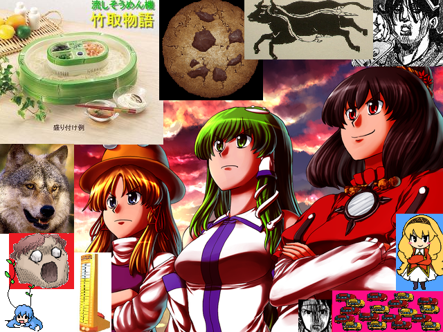
-

【28位】 No.36 ★ゴメスのあなから (合計点：99pt / 11票 / 遅刻提出済)
熱11 + 技14 + 語8 + 演12 + 斬15 + 遊9 + 笑19 + 酷22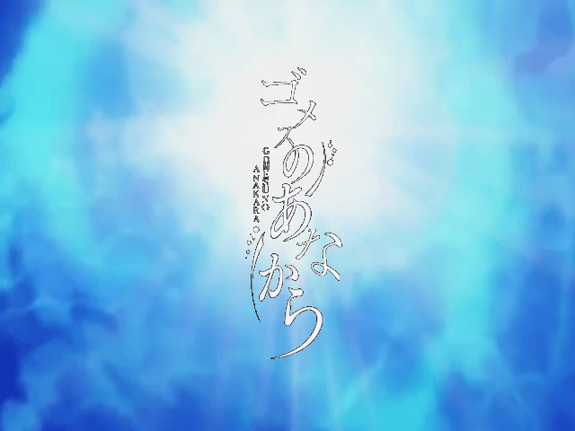
-

【29位】 No.75 ★カニ爆 (合計点：96.3pt / 9票 / 遅刻提出済)
熱14 + 技10 + 語12 + 演14 + 斬14 + 遊12 + 笑15 + 酷16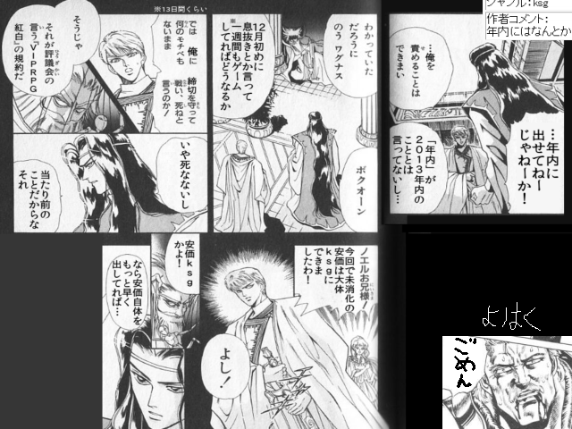
-

【30位】 No.33 ★デス蜜柑 (合計点：89pt / 15票 / 提出済)
熱10 + 技2 + 語12 + 演12 + 斬10 + 遊15 + 笑8 + 酷20作品紹介 / 非表示
使用ツール：2000
作者：徳明
ジャンル：読むerg
【総評/レビュー】
[熱0技0語1演1遊0笑1酷0]
会話がちゃんと活きていて、脚本は丁寧だなと感じました。言葉選びにも雰囲気が感じられてグー。 ただ、反面全体的な雰囲気は無難過ぎます。エロとしても凌辱としても中途半端な感は否めません(特にオチは飽きたのかと思いました)。 エロ好きの人を凌辱過ぎて逃し、凌辱好きな人を無難なところにまとめて逃し、どっちつかずな作品だと思います。文章ははっきりしていて読みやすかったので、変にセーブをかけず、もっと徹底的にやってもよかったのでは?(-/男性/26歳 ～ 30歳)
【各部門への評価】
[斬2]
カリスマのある死の支配者ははじめてみました。(だむ/男性/26歳 ～ 30歳)
-

【31位】 No.27 ★紅白踏み台合戦 (合計点：80pt / 10票 / 提出済)
熱5 + 技7 + 語6 + 演11 + 斬11 + 遊11 + 笑16 + 酷13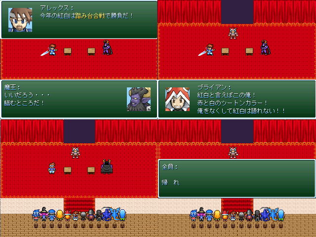
-

【32位】 No.25 ★もしもの宇宙戦争 (合計点：77pt / 10票 / 提出済)
熱12 + 技8 + 語6 + 演10 + 斬11 + 遊10 + 笑9 + 酷11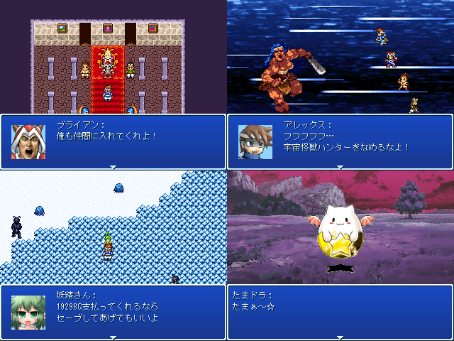
-

【32位】 No.32 ★なすーんが脱出するみたいなもの (合計点：77pt / 18票 / 提出済)
熱18 + 技7 + 語8 + 演5 + 斬7 + 遊17 + 笑7 + 酷8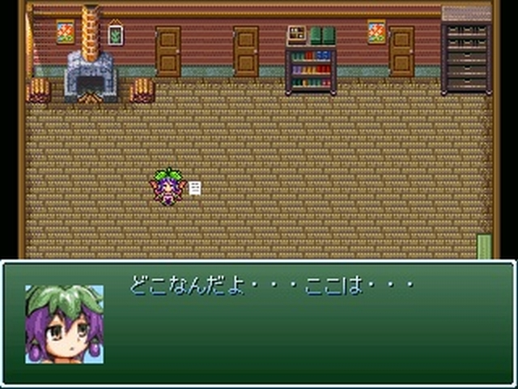
使用ツール：2000
作者：なかな
ジャンル：脱出ゲームみたいな
【総評/レビュー】
[熱1技1語1演0遊1笑0酷1]
脱出ゲームとして短くまとまっていて、大人と子供の姿の状態でイベントが変わった点が面白かったです。欲を言えばチェーンソーの所などでキャラチップを使った演出が欲しかったです。しかし演出にウェイトが多く、移動速度にも難があり、リスタートができずにゲームオーバーになってしまったのが残念でした。次回作も期待しております。(-/男性/21歳 ～ 25歳)[熱1技0語0演0遊0笑1酷0]
バグが多かったり、謎も微妙だったりと、脱出ゲー本来の面白さはあまり受け取れませんでしたが、しっかりとした作りではありました。 個人的には長さはこのぐらいでちょうどよいですし、前に進む感じがするのは楽しかったです。 ただ、電話など一部にランダム要素があるのはもったいなく感じました。脱出ゲーでは面倒くさくなるだけです。(-/男性/26歳 ～ 30歳)[熱1技1語0演0遊0笑2酷1]
バッドエンドを迎えるなすーんはかわいいと思いました(錯乱)(だむ/男性/26歳 ～ 30歳)
【各部門への評価】
[演0]
脱出ゲームなので、どっきりや意外性のある仕掛けが欲しかった(-/男性/26歳 ～ 30歳)
-

【34位】 No.52 ★同じ色の物体が４つほどくっつくと消えるバグを搭載したゲーム (合計点：76pt / 11票 / 提出済)
熱10 + 技21 + 語1 + 演10 + 斬12 + 遊13 + 笑5 + 酷4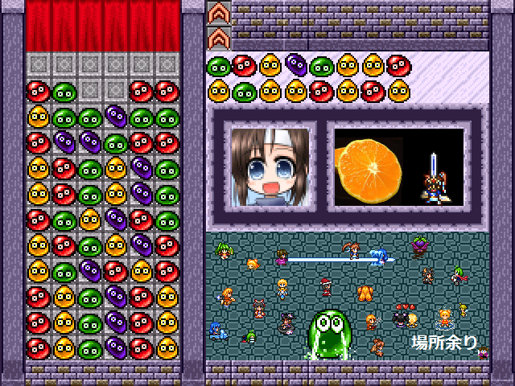
-

【35位】 No.40 ★キュア・プラムス (合計点：68pt / 8票 / 提出済)
熱9 + 技14 + 語2 + 演13 + 斬10 + 遊4 + 笑9 + 酷7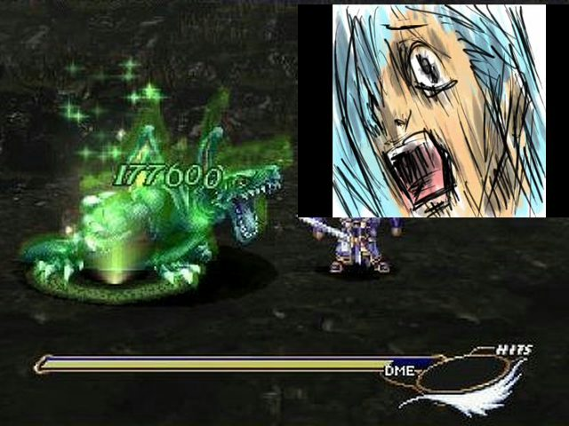
-

【36位】 No.70 ★核にゃんの魔法牧場 (合計点：65pt / 9票 / 提出済)
熱10 + 技11 + 語5 + 演6 + 斬13 + 遊4 + 笑7 + 酷9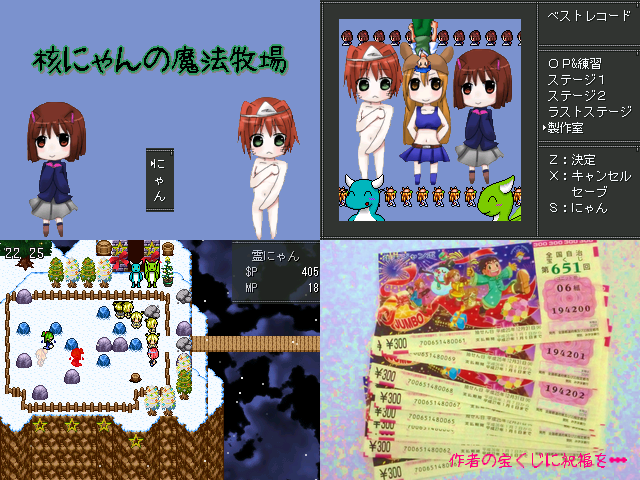
-

【37位】 No.44 ★玉露日記 (合計点：62pt / 12票 / 提出済)
熱10 + 技5 + 語14 + 演11 + 斬3 + 遊12 + 笑4 + 酷3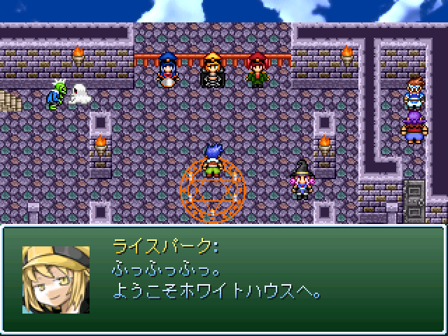
-

【38位】 No.34 ★包丁とデュラハン (合計点：59pt / 10票 / 提出済)
熱9 + 技6 + 語9 + 演11 + 斬5 + 遊7 + 笑7 + 酷5
-

【38位】 No.45 ★西脳 (合計点：59pt / 7票 / 提出済)
熱6 + 技3 + 語5 + 演9 + 斬12 + 遊2 + 笑8 + 酷14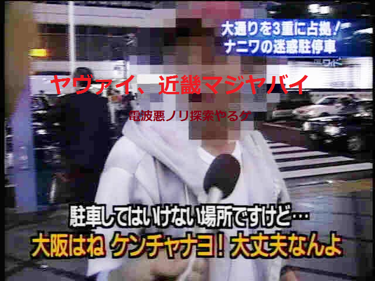
-

【40位】 No.29 ★ミリィのドタバタな日常 (合計点：57pt / 7票 / 提出済)
熱8 + 技5 + 語8 + 演8 + 斬7 + 遊7 + 笑8 + 酷6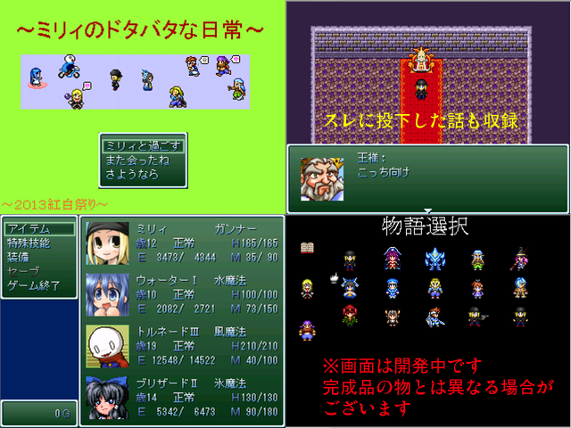
-
【41位】 No.53 ★2013年新キャラ総決算 (合計点：54pt / 10票 / 提出済)
熱6 + 技3 + 語8 + 演4 + 斬7 + 遊8 + 笑8 + 酷10
-

【42位】 No.64 ★Angel゜Hal0 (合計点：46pt / 5票 / 提出済)
熱8 + 技9 + 語2 + 演6 + 斬8 + 遊8 + 笑2 + 酷3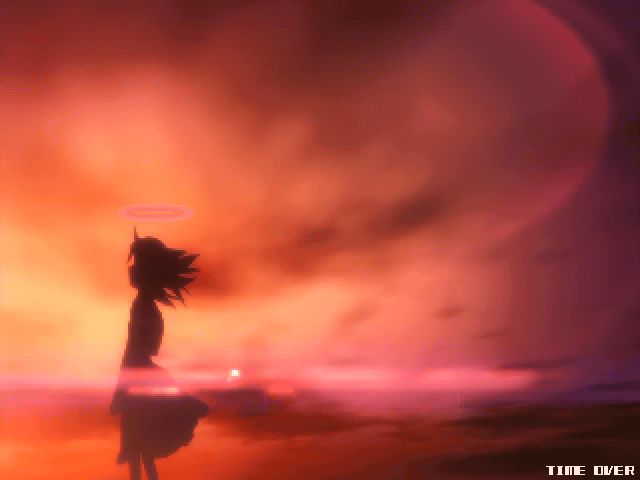
-

【43位】 No.38 ★オクデッド (合計点：35pt / 4票 / 提出済)
熱6 + 技2 + 語8 + 演7 + 斬6 + 遊6 + 笑0 + 酷0
使用ツール：2000
作者：きぎぬ
ジャンル：必死デフォ戦
【総評/レビュー】
[熱1技1語2演2遊2笑2酷0]
なにこれ枠かと思いきや、意外にもちゃんとしたRPG。 一人ボスを殺るたびに、味方も一人死ぬ設定が実にいい。実際、人類をせん滅させようとしている魔王軍と真っ向で戦おうとしたらこのぐらいの犠牲は起きて当然で、RTP顔のシンプルな表情に、いろんな意味をプレイヤー側で加えることができる。 個人的にこのゲームで評価したいのは、容量の少なさだ。RTPを駆使して、異常なほど容量を少なくすることに成功している。 使わなかった画像すらも入れたままで、容量が重くなっても気にしないツクラーが増えている中、この作品のシンプルさは見習うべきだと思った。なんのために実行ファイルを抜いてうpしているのか。その意味をもう一度取りかえしたい。(-/男性/26歳 ～ 30歳)
【各部門への評価】
[熱2]
取捨選択がアツかった。(だむ/男性/26歳 ～ 30歳)
-

【44位】 No.41 ★偽エルと水産のラブラブデート (合計点：34pt / 9票 / 提出済)
熱2 + 技2 + 語2 + 演5 + 斬2 + 遊5 + 笑7 + 酷9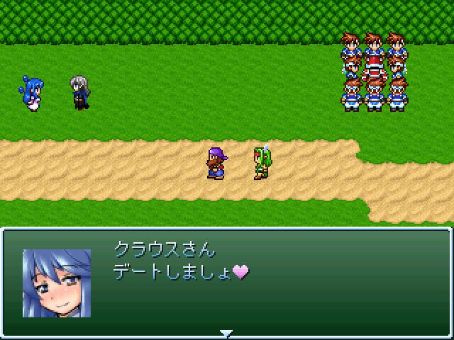
-

【45位】 No.59 ★闇Ⅰハロウィン (合計点：32.4pt / 5票 / 遅刻提出済)
熱5 + 技6 + 語5 + 演7 + 斬4 + 遊3 + 笑4 + 酷2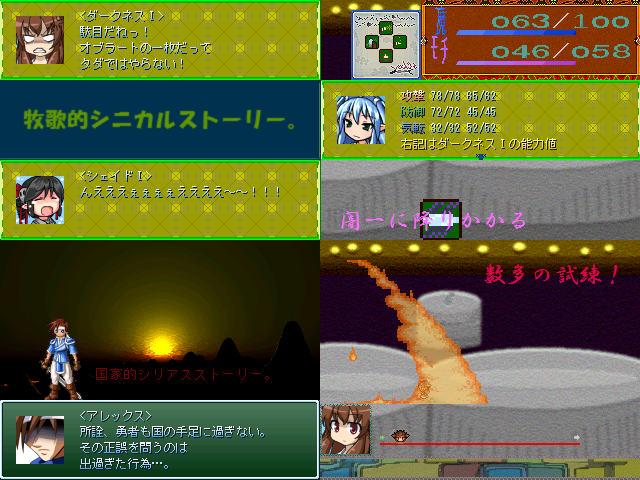
-

【46位】 No.22 ★R-Ⅱ The batter (合計点：31.5pt / 8票 / 遅刻提出済)
熱9 + 技6 + 語3 + 演3 + 斬4 + 遊8 + 笑1 + 酷1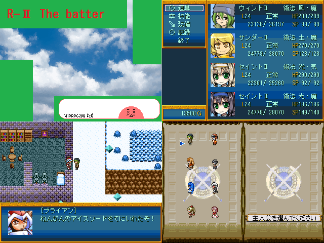
-

【47位】 No.62 ★あんこくのみらいで (合計点：30pt / 4票 / 提出済)
熱4 + 技4 + 語6 + 演7 + 斬4 + 遊5 + 笑0 + 酷0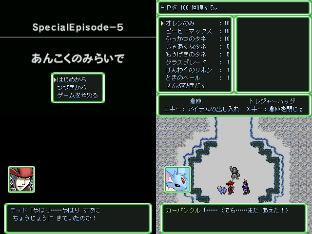
-

【48位】 No.23 ★もしも新キャララッシュだったら (合計点：29pt / 5票 / 提出済)
熱3 + 技3 + 語4 + 演4 + 斬5 + 遊3 + 笑3 + 酷4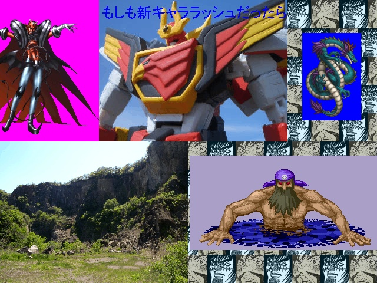
-


【48位】 No.54 ★セイブ・ザ・ロード (合計点：29pt / 4票 / 提出済)
熱3 + 技5 + 語4 + 演3 + 斬2 + 遊2 + 笑5 + 酷5
-

【50位】 No.57 ★もしも全自作音楽でダークアーディス掌編だったら (合計点：28pt / 6票 / 提出済)
熱2 + 技1 + 語3 + 演6 + 斬5 + 遊4 + 笑1 + 酷6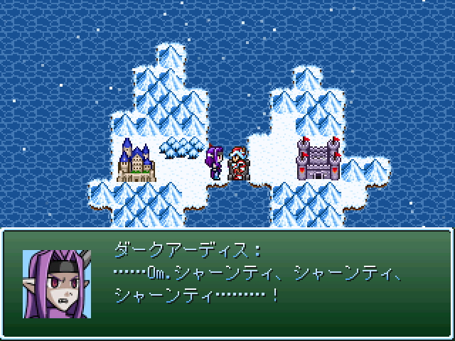
-

【51位】 No.15 ★闇勇者の過去 (合計点：17.1pt / 2票 / 遅刻提出済)
熱3 + 技2 + 語3 + 演1 + 斬4 + 遊1 + 笑2 + 酷3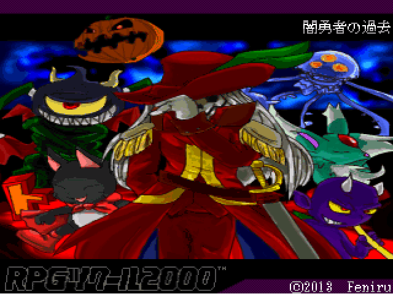
-


【52位】 No.16 ★霊波乃科学 (合計点：15pt / 3票 / 提出済)
熱0 + 技0 + 語1 + 演2 + 斬5 + 遊0 + 笑1 + 酷6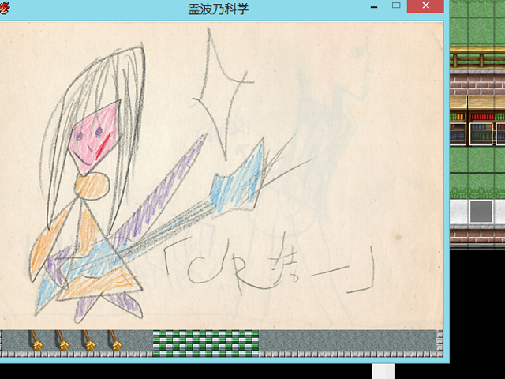
-
【53位】 No.46 ★もしも時を越えて（disk2 (合計点：13.5pt / 3票 / 遅刻提出済)
熱2 + 技3 + 語2 + 演4 + 斬1 + 遊3 + 笑0 + 酷0
-

【54位】 No.73 ★俺がtkったアクションホコグラ素材集2013～年末年始やらないか大バーゲン～ (合計点：8pt / 4票 / 提出済)
熱0 + 技3 + 語0 + 演3 + 斬2 + 遊0 + 笑0 + 酷0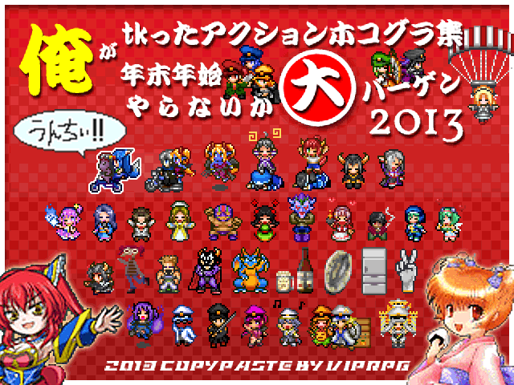
-

【55位】 No.35 ★北の宿から。 (合計点：6pt / 2票 / 提出済)
熱1 + 技2 + 語1 + 演0 + 斬1 + 遊0 + 笑1 + 酷0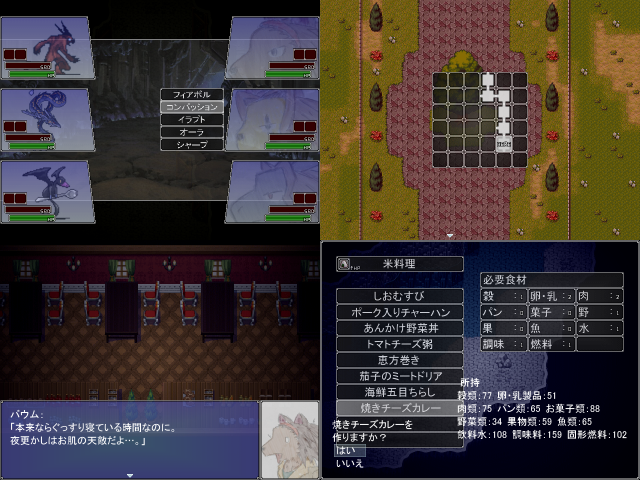
-

【56位】 No.14 ★もしもサバイバーズ (合計点：1pt / 2票 / 提出済)
熱0 + 技0 + 語0 + 演0 + 斬0 + 遊0 + 笑0 + 酷1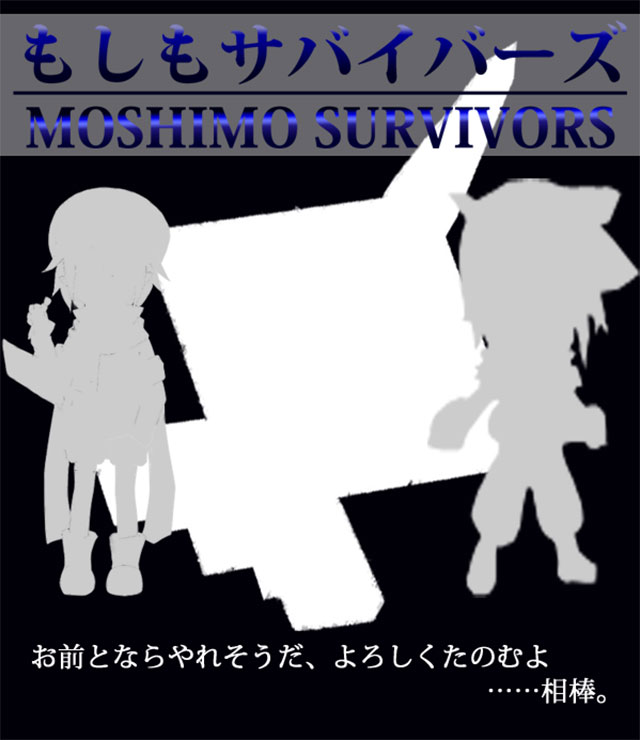